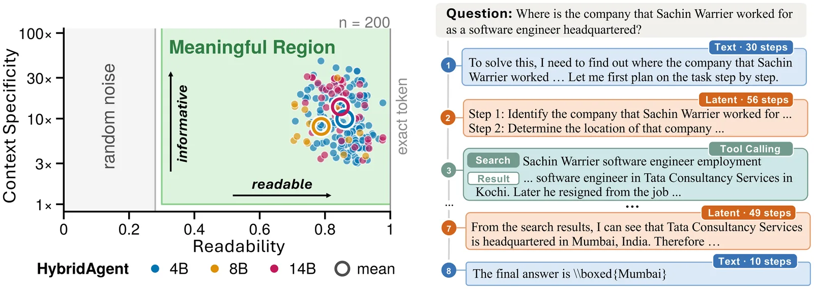
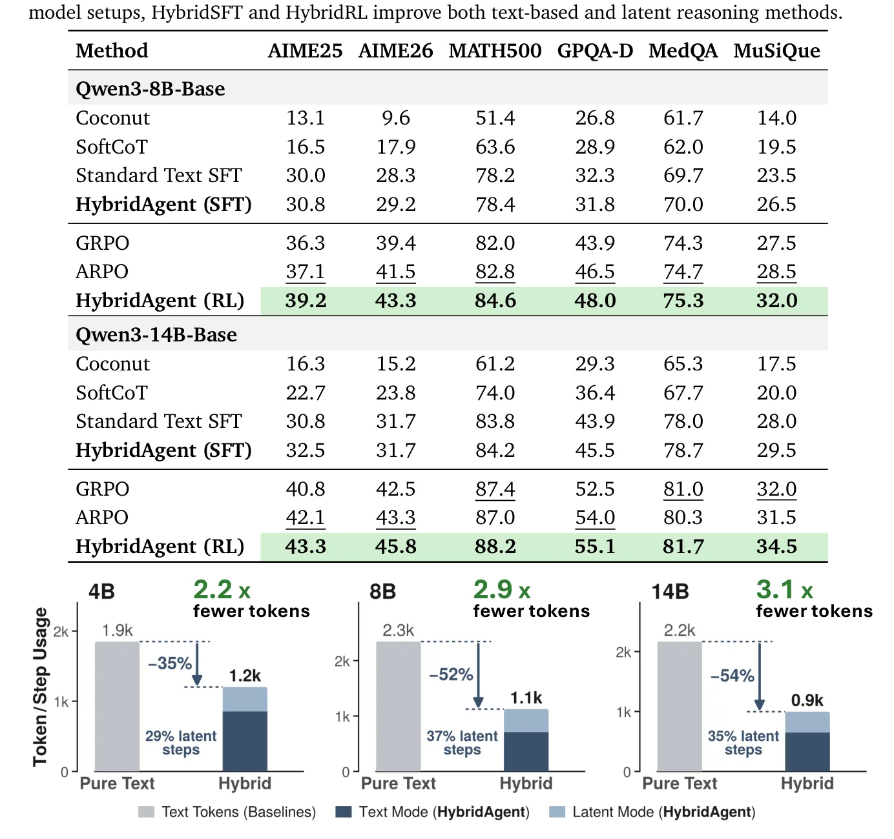

O Dilema da Linguagem Única em Agentes LLM
A inteligência artificial de ponta deixou de depender exclusivamente da capacidade de raciocínio interno do modelo. Hoje, a performance de agentes baseados em LLMs (Large Language Models) depende crucialmente da sua habilidade de interagir com o mundo externo: invocar ferramentas especializadas, observar feedbacks do ambiente e adaptar suas próximas ações. No entanto, existe uma limitação estrutural fundamental: a língua franca para tanto o raciocínio interno quanto a interação externa é o texto.
Em arquiteturas padrão, todas as trajetórias de raciocínio intermediário são geradas token por token como texto antes que o agente possa agir no ambiente. Isso cria um gargalo de eficiência. Uma linha de pesquisa alternativa, o raciocínio latente, propõe desdobrar o cálculo diretamente no espaço contínuo de vetores ocultos (hidden space) do modelo. Isso elimina a necessidade de decodificar e verbalizar cada passo intermediário, permitindo um raciocínio interno mais rápido e eficiente dentro da "língua própria" do modelo.
O problema é que os atuais reasoners latentes permanecem selados atrás da fronteira do modelo. Ao contrário do texto decodificado, os vetores latentes contínuos (i) não possuem vias nativas para invocação de ferramentas em raciocínios agênticos de múltiplas rodadas, e (ii) não expõem facilmente semânticas interpretáveis por humanos. Isso os torna difíceis de supervisionar durante o treinamento e de auditar ou depurar na inferência. Essa divisão mantém as duas linhas de trabalho separadas no desenvolvimento de agentes de próxima geração.

A Proposta: Hybrid Reasoning Agents
Os autores propõem fechar essa lacuna com os Hybrid Reasoning Agents (HybridAgents). Esta é uma arquitetura unificada que navega dinamicamente entre o raciocínio latente e a interação baseada em texto dentro de um único processo de geração. A ideia central é permitir que o agente pense além da linguagem humana (usando latência) enquanto ainda age através dela (usando texto para ferramentas e monitoramento).
Mecanismo: O HybridLink e a Memória de Trabalho
Construir tal agente é desafiador porque ele precisa lidar com entradas híbridas: vetores contínuos densos e tokens discretos esparsos, além de determinar quando transitar entre os modos para equilibrar ações agênticas e eficiência de raciocínio. Para resolver isso, os autores revisitam a arquitetura do modelo e estendem sua interface de geração autoregressiva para suportar entradas híbridas.
Implementação Técnica
O HybridLink atua como uma ponte. Ao mapear os estados ocultos de volta ao espaço de embedding, ele permite a recorrência sequencial dentro do modo latente. Isso significa que o modelo pode processar múltiplos passos de raciocínio interno sem precisar gerar texto explícito para cada um, mantendo o contexto denso e contínuo. A geração híbrida de múltiplas rodadas (multi-turn) é realizada através da memória de trabalho do próprio agente, que preserva trajetórias híbridas completas de texto, pensamentos latentes e observações de ferramentas entre as rodadas.

Transparência Inesperada: Pseudo-texto Latente
Um achado surpreendente deste trabalho é a capacidade do HybridAgent de renderizar seus pensamentos no modo latente como pseudo-texto legível por humanos. Isso torna o raciocínio latente transparente e diretamente inspecionável, em vez de opaco. Os autores demonstram quantitativa e qualitativamente que os pensamentos latentes são altamente legíveis e específicos ao contexto, carregando semântica suficiente para serem interpretados como texto.
Pós-Treinamento: HybridSFT e HybridRL
Para desbloquear totalmente o potencial do raciocínio híbrido, os autores desenvolvem algoritmos dedicados de pós-treinamento. O primeiro passo é o HybridSFT (Supervised Fine-Tuning). Este estágio estabiliza a geração híbrida integrada a ferramentas, ensinando o modelo base (backbone) a coordenar-se com o HybridLink. O treinamento é feito por ativação e auto-condicionamento, adaptando o backbone a raciocinar sobre pensamentos latentes produzidos pelo seu próprio HybridLink. Isso fecha o gap entre treinamento e inferência (train-inference mismatch).
Otimização de Política com HybridRL
O segundo passo é o HybridRL (Reinforcement Learning). Este algoritmo escala as capacidades de raciocínio agêntico treinando o HybridAgent a equilibrar adaptativamente o raciocínio latente e a interação baseada em texto. Para realizar isso, os autores habilitam a otimização de política sobre trajetórias híbridas através de fatoração de política híbrida e replay exato de rollout (exact rollout replay). Isso permite que o modelo aprenda quando é mais eficiente pensar no espaço latente e quando é necessário agir através do texto.

Avaliação e Resultados
Os autores avaliam o HybridAgent em três escalas de modelo (8B, 14B e superiores) em 11 benchmarks que cobrem matemática, ciência, medicina, busca e raciocínio agêntico. Os resultados mostram que o HybridAgent entrega performance competitiva sobre agentes LLM de fronteira maiores e frameworks especializados de uso de ferramentas. Por exemplo, o HybridAgent (14B) melhora a média dos benchmarks em 17,4% em comparação com a baseline agêntica mais forte.
Análise de Escalabilidade e Precisão
A Tabela 2 destaca os resultados em benchmarks de matemática e busca intensiva em conhecimento. O HybridAgent, após o estágio de RL, atinge pontuações superiores em métricas como AIME25, AIME26, MATH500, GPQA-D, MedQA e MuSiQue. Por exemplo, no benchmark AIME25, o HybridAgent (14B) com RL atinge 43,3%, superando o ARPO (42,1%) e o GRPO (40,8%). No MATH500, atinge 84,6%, contra 82,8% do ARPO.
Redução de Tokens e Passos de Geração
Além da precisão, a eficiência é um ponto forte. O HybridAgent reduz significativamente o uso de tokens de texto e o número total de passos de geração em comparação com agentes LLM baseados apenas em texto de tamanho correspondente. A Figura 6 ilustra essa eficiência através das escalas de modelo, mostrando que a abordagem híbrida mantém a qualidade do raciocínio enquanto corta drasticamente o custo computacional.
Conclusão e Implicações
O HybridAgent representa um framework escalável e eficiente para a próxima geração de agentes. Ele permite que os modelos raciocinem além da linguagem humana, mantendo a interação agêntica em ambientes externos e a inspecionabilidade externa. Ao combinar raciocínio latente eficiente com inspeção textual, o HybridAgent oferece um caminho viável para superar os gargalos de eficiência e transparência dos agentes atuais.
O Que Fica em Aberto
Apesar dos avanços, questões sobre a robustez do HybridLink sob distribuições de dados muito diferentes das de treinamento permanecem. A capacidade de renderizar pseudo-texto latível é promissora, mas a fidelidade semântica completa em cenários de alta complexidade ou ambiguidade precisa de mais investigação. O código e os dados estão disponíveis no GitHub da Together AI, convidando a comunidade a explorar e estender esta arquitetura.
O que fica
- HybridAgents alternam entre raciocínio latente e textual via HybridLink, unindo eficiência computacional e transparência.
- O método reduz o uso de tokens em até 54,7% e acelera a inferência em 2,6x comparado a agentes baseados apenas em texto.
- Algoritmos de pós-treinamento (HybridSFT e HybridRL) estabilizam a coordenação entre os dois modos de geração.
- O raciocínio latente é renderizado como pseudo-texto, permitindo inspeção humana e depuração direta.
Paper original: Hybrid Reasoning Agents
Comentários
Nenhum comentário ainda. Seja o primeiro.